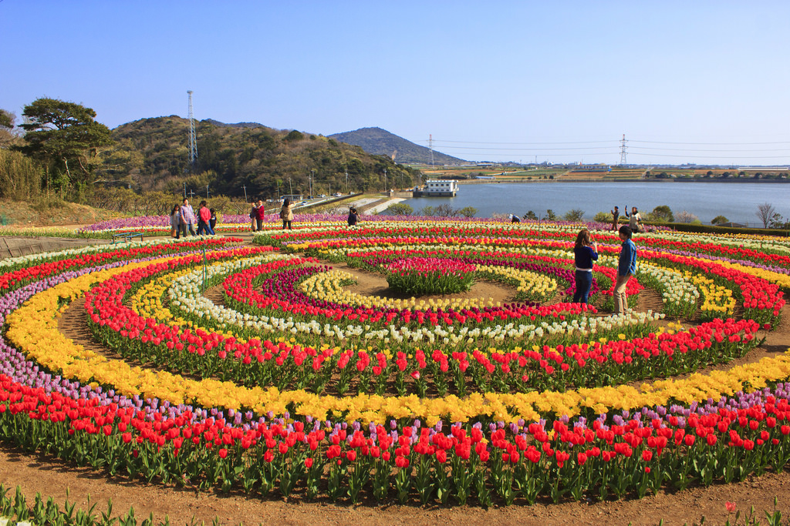
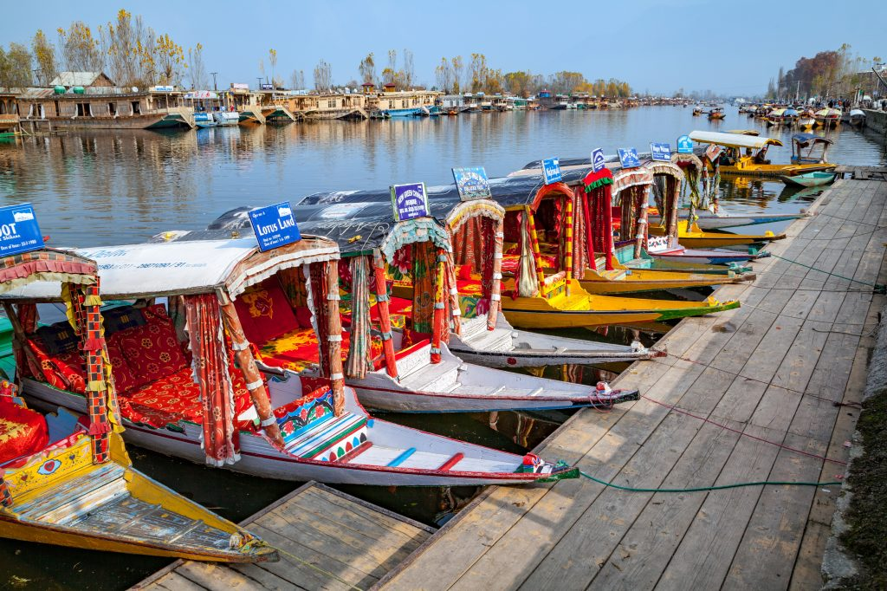
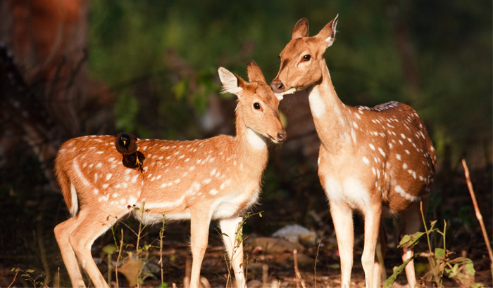

Jammu & Kashmir: Heaven On Earth
Jammu & Kashmir, a piece of heaven on earth, is the 19th largest state in India and it is located mostly all in the Himalayan mountains. It is also the only state in India with a Muslim-majority population.
Places To Visit
Kashmir is an epitome of natural beauty, and it is renowned the world
over for that. You can soak your senses on the many lakes, gardens and hill
stations that attract thousands of tourists every year. Take perfect pictures and
take home memories of a perfect holiday at:
Indira Gandhi Tulip Garden In Kashmir
You close your eyes and enter the garden, and open them to find
yourself submerged in a pool of flowers There are tulips of all colors in this
garden that have been planted with seeds brought specially from Spain. They are
the best during springs, and the nearby Dal Lake along with these flowers
provides the perfect backdrop for photography. These flowers represent the
ones from Amsterdam.
Location: Foothills of the Zabarwan hills, Dal Lake, Srinagar.
Known for: Tulips, tulips and more tulips!
How to reach: Take any local transport, as this is one of the famous places and can be easily located.
Approximate Cost: They charge INR 25-50 per person as entry fees.
Operating hours: 7 am to 7:30 pm
Type: Garden Foothills of the Zabarwan hills, Dal Lake, Srinagar.

Dal Lake In Kashmir
Often referred to as the 'Jewel in the Crown of Kashmir,'
Dal Lake is one of the most precious slices of paradise in Kashmir.
Surrounded by the lush Mughal gardens and lined with British-built
houseboats, the lake is the region's favorite summer destination for
centuries. The houseboats and Shikara rides that present a scintillating
sight of floating gardens and markets filled with vibrant lotus flowers,
fruits, and vegetables; is worth a million bucks! Spend a few hours and you
are sure to be mesmerized.
Location: Boulevard Road, Srinagar
Known for: Shikaras and House-Boat Ride with really scenic views.
How to reach: One of the easiest places to reach in Srinagar. It is easily accessible via all modes of local transport.
Approximate Cost: A one hour ride on Shikara will cost you INR 400-500 per person approximately. Houseboat charges depend upon time of visit and also on availability.
Operating hours: 6 am to 6 pm
Type: Lake

Apharwat Peak In Kashmir
Located about 4,200 meters above Mean Sea Level (MSL),
Apharwat Peak is the best location for winter activities in Kashmir.
With snow covering the peak most of the year, it makes a perfect location
for skiers and snowboarders every month. From beginner skiers to advanced
ones, all of them are fond of this place during winters. However, in summer,
lush greenery blooms, creating conditions for perfect horseback rides
through the mountains. Another interesting fact about the Apharwat Peak
is that the Line of Control which divides the Indian and Pakistan
Controlled parts of Kashmir, is barely a few kilometers from the peak.
Location: Gulmarg
Known for: Snow activities and horseback rides.
How to reach: Situated near Alpather Lake in Khilanmarg.
Approximate Cost: Free
Precautions: There is extreme weather during the winters so all activities may not be available. Also, reaching this place depends on weather conditions as well; it may not always be possible.
Type: Park

Gulmarg Bio Reserve In Gulmarg
This bio-reserve is covering an area of 180 sq km and many
common species of flora, fauna, avifauna can be found here. Located at an
altitude varying between 2400 and 4,300 meters above sea level, this reserve
is among those regions where biodiversity is in its richest form.
The visitors can find the endangered Musk Deer that is the ultimate
attraction of the place. Animals like Hangul, Black Bear, Leopard,
Brown Bear and Red Fox are also found. The place is the best one for
ornithologists. This place has a very good population of indigenous
and migratory birds too. Birds like Griffon Vulture, Snow Cock, Koklas,
European Hoopoe, Blue Rock Pigeon Monal, Kashmir Roller and Jungle Crow.
